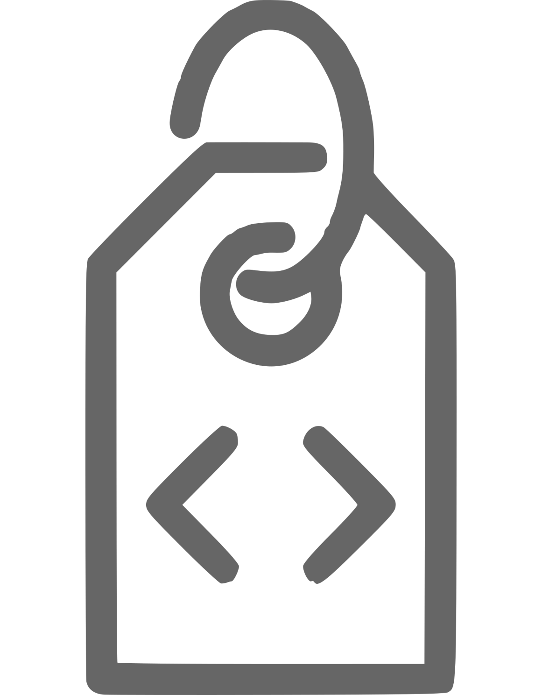

Environmental Data Initiative
~ Repository and Curation Services for Environmental Data ~
How to Publish

Login
Login with ORCiD, Google, GitHub, or EDI credentials.

Describe
Describe important features of your data and upload for review by EDI.

Review
Consider our curation comments and revise if necessary.

Publish
Publish a first class research object for citation and reuse.
Notable Characteristics
- ● Metadata - We emphasize the value of full and accurate metadata
- ● Reuse - Our repo is full of high-quality long-term datasets for reuse
- ● Persistence - Published data are immutable, safe, and secure
- ● Tools - Datasets inherit tooling for next-generation research
Currently Featured Data


Recent activity
Recent News
2022 Summer Fellowship Program
We are accepting applications from research projects and field stations interested in hosting an EDI Fellow next Summer. The deadline is Dec. 23.
Read more.
Monthly Webinar
Join us for Colin Smith's (EDI) presentation "Keep Your Science Up-to-Date with EDI Repository Event Notifications.” on November 18th, 2021 at 2pm ET. Registration information.

Normalization of Creator Names in EDI’s Data Portal
The Advanced Search feature of EDI’s Data Portal lets you select a dataset Creator name from a drop-down list of all dataset creators in our repository. The search then displays all the datasets that have that name as one of its creators. Unfortunately, many creators’ names occur in multiple variations in different datasets and, in the past, each variation appeared separately in the drop-down list. We have recently created web services that implement this kind of names normalization, and the EDI Data Portal is now using the normalized names.
Read more.
Updates of user-contributed journal citation interface on EDI Data Portal
has recently updated its user-contributed journal citation interface on its Data Portal to include more granular information regarding the type of citation being submitted. The addition of the Relation Type form field allows you to select the relationship between the data package and the journal manuscript where the data package is mentioned using one of three relationship types: "IsCitedBy" - this data package is formally cited in the manuscript, "IsDescribedBy" - this data package is explicitly described within the manuscript, or "IsReferencedBy" - this data package is implicitly described within the manuscript.
Read more.